Load Packages
# numerical calculation & data frames
import numpy as np
import pandas as pd
# visualization
import matplotlib.pyplot as plt
import seaborn as sns
import seaborn.objects as so
# statistics
import statsmodels.api as smMixed
# numerical calculation & data frames
import numpy as np
import pandas as pd
# visualization
import matplotlib.pyplot as plt
import seaborn as sns
import seaborn.objects as so
# statistics
import statsmodels.api as sm# pandas options
pd.set_option("mode.copy_on_write", True)
pd.options.display.precision = 2
pd.options.display.float_format = '{:.2f}'.format # pd.reset_option('display.float_format')
pd.options.display.max_rows = 6
# Numpy options
np.set_printoptions(precision = 2, suppress=True)Source: MovieLens 1M movie ratings
McKinney’s: 13. Data Analysis Examples
1990년대 후반에서 2000년대 초반의 영화 평가에 대한 3개의 relational data로 이루어져 있고,
user_id, movie_id의 keys로 연결되어 있습니다.
users: 유저에 대한 정보ratings: 평점에 대한 정보movies: 영화에 대한 정보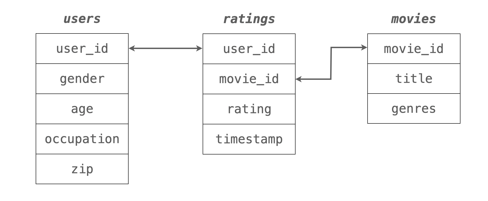
아래 데이터 링크가 원활하지 않을 시, 위의 MovieLens 1M movie ratings 사이트에서 직접 다운받으세요.
ml-1m.zip 압축파일을 풀어 users.dat, ratings.dat, movies.dat 세 파일을 아래 방식으로 읽어옵니다.
unames = ["user_id", "gender", "age", "occupation", "zip"]
users = pd.read_table(
"https://raw.githubusercontent.com/wesm/pydata-book/3rd-edition/datasets/movielens/users.dat",
sep="::",
header=None,
names=unames,
engine="python",
)
users user_id gender age occupation zip
0 1 F 1 10 48067
1 2 M 56 16 70072
2 3 M 25 15 55117
... ... ... ... ... ...
6037 6038 F 56 1 14706
6038 6039 F 45 0 01060
6039 6040 M 25 6 11106
[6040 rows x 5 columns]rnames = ["user_id", "movie_id", "rating", "timestamp"]
ratings = pd.read_table(
"https://raw.githubusercontent.com/wesm/pydata-book/3rd-edition/datasets/movielens/ratings.dat",
sep="::",
header=None,
names=rnames,
engine="python",
)
ratings user_id movie_id rating timestamp
0 1 1193 5 978300760
1 1 661 3 978302109
2 1 914 3 978301968
... ... ... ... ...
1000206 6040 562 5 956704746
1000207 6040 1096 4 956715648
1000208 6040 1097 4 956715569
[1000209 rows x 4 columns]mnames = ["movie_id", "title", "genres"]
movies = pd.read_table(
"https://raw.githubusercontent.com/wesm/pydata-book/3rd-edition/datasets/movielens/movies.dat",
sep="::",
header=None,
names=mnames,
engine="python",
)
movies.head(6) movie_id title genres
0 1 Toy Story (1995) Animation|Children's|Comedy
1 2 Jumanji (1995) Adventure|Children's|Fantasy
2 3 Grumpier Old Men (1995) Comedy|Romance
3 4 Waiting to Exhale (1995) Comedy|Drama
4 5 Father of the Bride Part II (1995) Comedy
5 6 Heat (1995) Action|Crime|Thrillerratings과 users 데이터를 merge한 후 다음과 같은 user_rating 데이터셋을 만드세요.# user_id gender age occupation zip movie_id rating timestamp
# 0 1 F 1 10 48067 1193 5 978300760
# 1 1 F 1 10 48067 661 3 978302109
# 2 1 F 1 10 48067 914 3 978301968
# ... ... ... ... ... ... ... ... ...
# 1000206 6040 M 25 6 11106 562 5 956704746
# 1000207 6040 M 25 6 11106 1096 4 956715648
# 1000208 6040 M 25 6 11106 1097 4 956715569movie_id)별로 남녀(gender)에 따른 rating의 평균과 그 개수(count)을 구해보세요.# movie_id gender mean count
# 0 1 F 4.19 591
# 1 1 M 4.13 1486
# 2 2 F 3.28 176
# 3 2 M 3.18 525
# 4 3 F 3.07 136
# 5 3 M 2.99 342
...다음과 같은 플랏을 그려보고 평가의 수가 적을수록 그 편차가 커지는 현상을 확인해보세요.
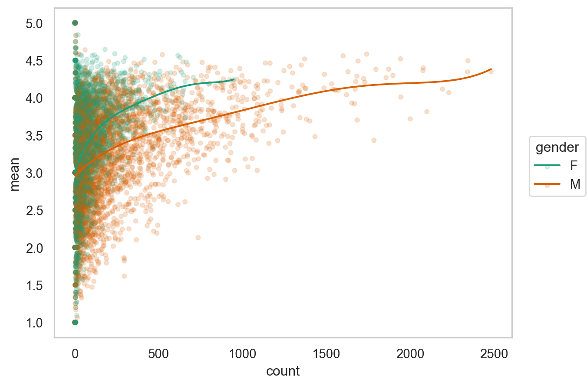
.limit(x=(0, 500), y=(2.5, 4.5))을 추가하여 평가 개수(count)가 0에서 500사이이고, 평균 rating이 2.5에서 4.5 사이인 것으로 확대해서 보고, 평가 개수가 몇 개 정도부터 남녀의 평가의 차이가 대략 일정하게 되는지 살펴보세요.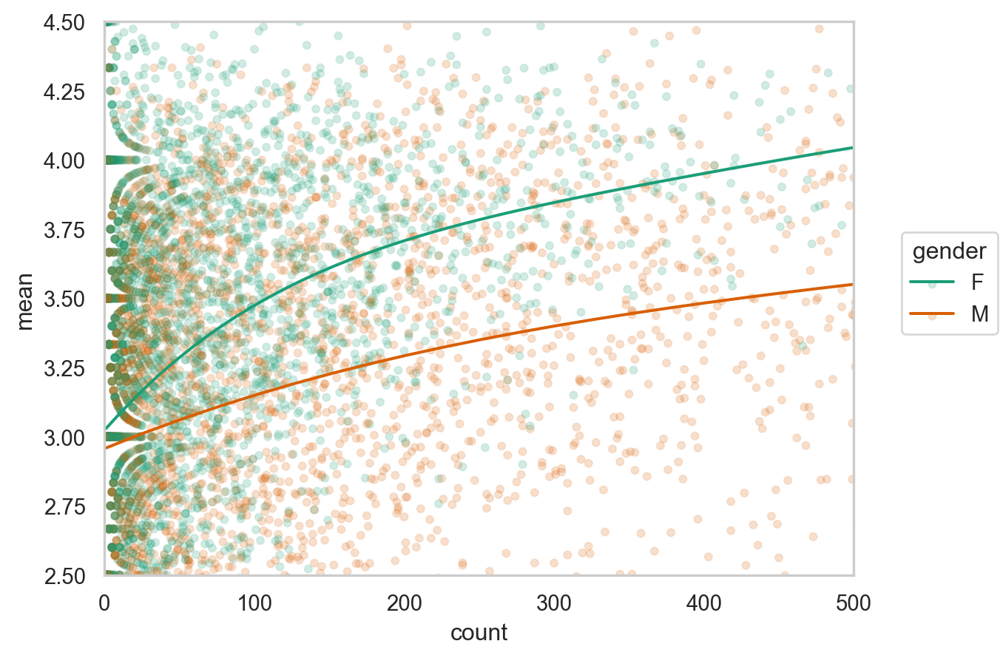
영화별로 남녀의 평가가 크게 갈리는 영화들을 찾기 위해
popular_movies라고 명명하고,
gender에 관해 wide format으로 변환한 후; pivot()을 이용assign()을 이용movies 테이블 안의 영화제목(title)을 merge()를 이용해 추가하세요.3번 플랏에서 유추되듯이 평가의 개수가 영화의 완성도 혹은 인기도를 파악할 수 있는 대략적인 지표가 될 수 있습니다. 즉, 평가수가 많을 수록 평점도 높습니다. 따라서 평가 개수를 바탕으로 인기도(popularity)를 수치화 하려고 합니다.
다음과 같은 count를 20개의 구간으로 discretize해주는 함수를 성별로 grouping된 user_rating 데이터에 apply() 하세요.
def popular(g):
g["popularity"] = pd.qcut(g["count"], q=20, labels=False)
return gpopularity에 따라 평점이 높아지는 현상을 성별을 고려한 후 본 결과를 아래와 같이 플랏을 통해 확인해봅니다.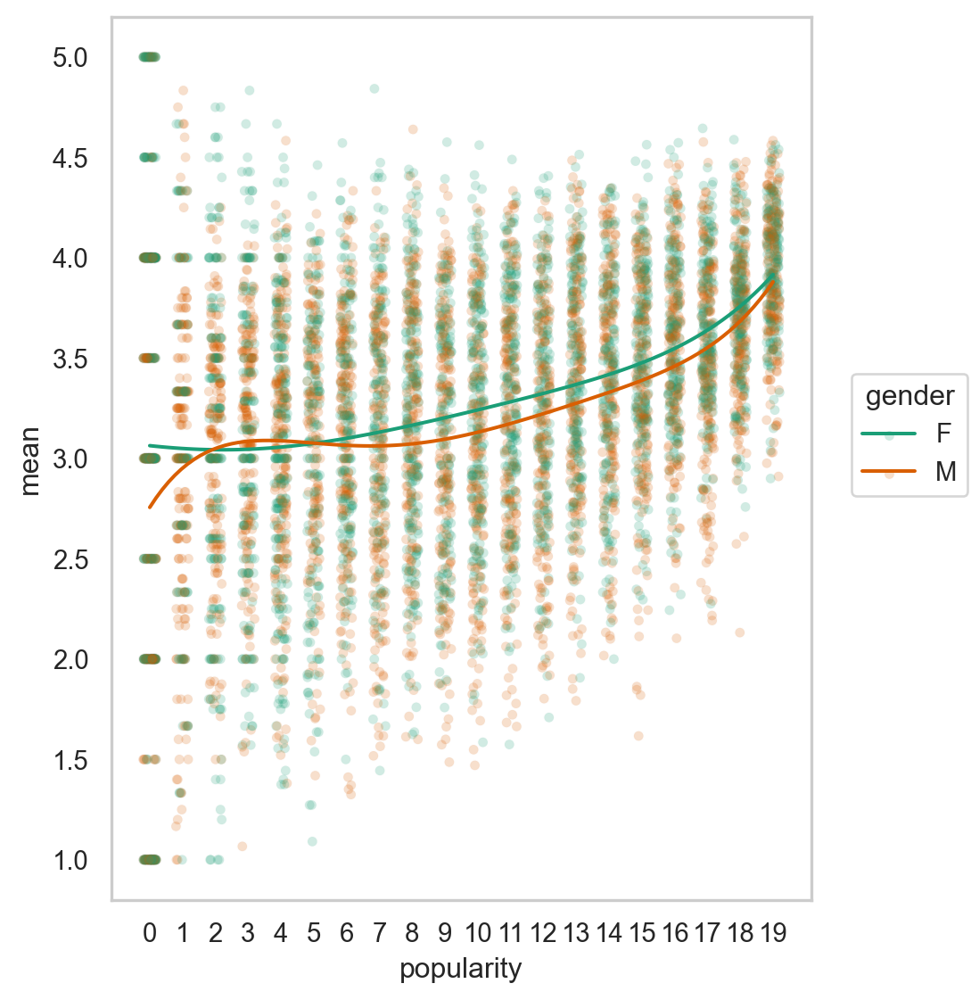
남녀별로 평점의 편차가 큰, 즉 의견이 분분한 영화들을 구해봅니다.
popular_movies에 한해 남녀 각각에 대해 영화별로 평점의 편차를 표준편차로 구해보고,
popular_movies로 사용합니다.다음 method를 이용하는 함수를 정의하고 apply()로 적용해 봅니다.
df.nlargest(n, "variable name", keep="all")movies 데이터와 merge하여 표시합니다.이제 초점을 유저들에게 돌려, 유저들의 특성을 고려해봅니다. 일반적으로 같은 소스(사람)에서 온 데이터는 비슷한 성향을 띄는데 이를 depenency의 문제라고 합니다. 한 가족 구성원으로부터 왔다든가, 같은 학교의 학생들과 같이 구체적으로 명시하기 어렵지만 데이터 상에서 비슷한 군집을 이룹니다. 이 데이터의 경우 동일한 유저들의 특성이 존재할 수 있는데, 예를 들어 후한 점수를 준다든가, 같은 유저라도 어떤 장르의 영화는 매우 낮은 평점을 준다든가 하는 현상이 있을 수 있는데 이를 알아봅니다.
mean)과 표준편차(std), 개수(count)를 구합니다; 성별 차는 없는 것으로 간주함count)를 10개의 구간으로 pd.cut을 이용해 discretize해서 살펴봅니다.
np.log 이용)count를 .facet을 이용해 아래와 같이 유저들 각자의 평점 평균과 표준편차의 관계를 살펴봅니다; (아래 플랏은 데이터를 적절히 필터링 한 결과입니다.)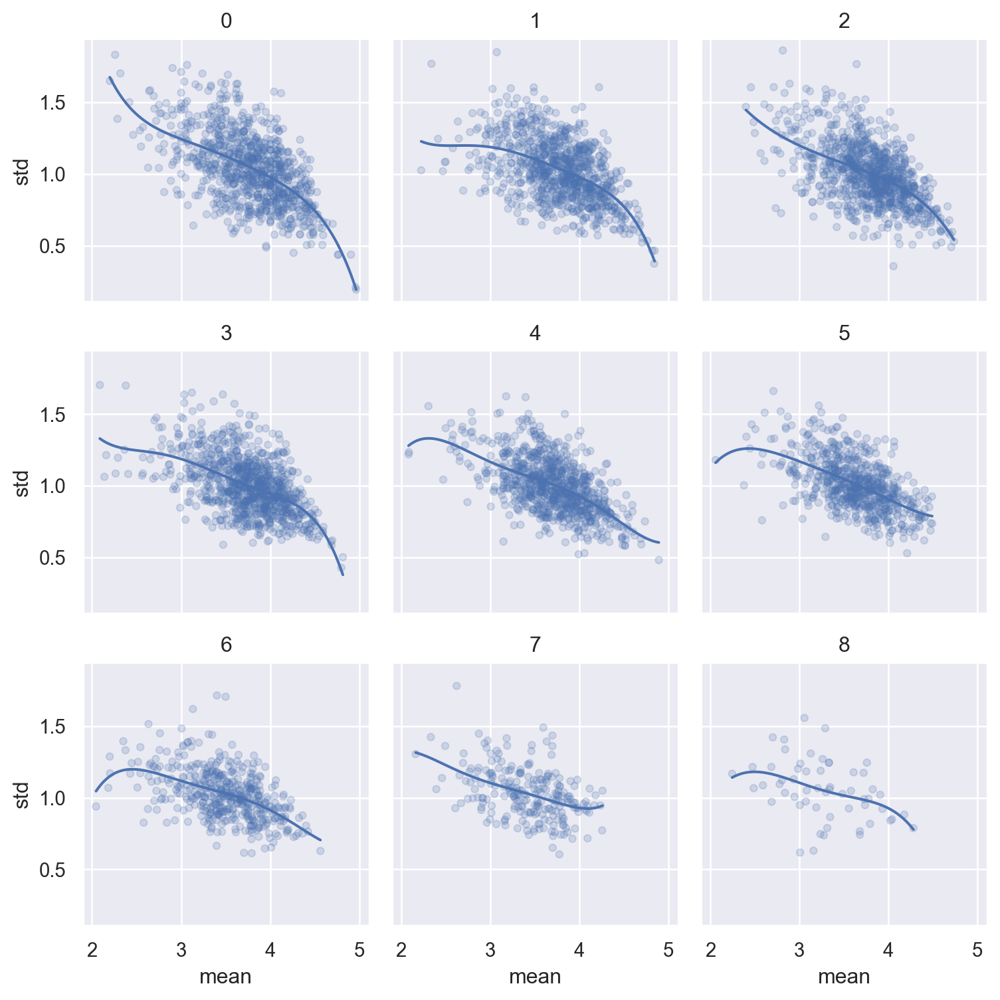
movies 데이터에서 장르(genres)는 여러 장르에 포함되는 것을 | 기호로 나누어 표기되어 있고, 분석을 위해서 다음 코드를 이용해 long format으로 각 장르가 열에 한번씩만 나오도록 다음과 같이 바꾸세요.
movies_long = movies.copy()
movies_long["genres"] = movies_long["genres"].str.split("|")
movies_long = movies_long.explode("genres")
movies_long.head(8)
# movie_id title genres
# 0 1 Toy Story (1995) Animation
# 0 1 Toy Story (1995) Children's
# 0 1 Toy Story (1995) Comedy
# 1 2 Jumanji (1995) Adventure
# 1 2 Jumanji (1995) Children's
# 1 2 Jumanji (1995) Fantasy
# 2 3 Grumpier Old Men (1995) Comedy
# 2 3 Grumpier Old Men (1995) Romance이 movie_long과 1번에서 만든 user_rating을 merge한 후 다음 문제를 이어가세요.
9.1 장르별로 평점의 개수를 간단히 플랏으로 살펴보는데 남녀 별로 따로 비율이 나오도록 해보세요.
so.Hist("proportion", common_norm=False)이 필요할 수 있음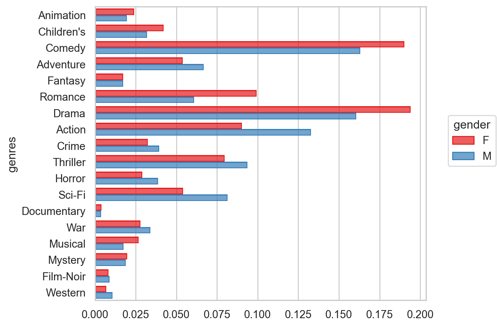
9.2 이번에는 장르별로 평점의 평균를 남녀별로 간단히 플랏으로 확인해보세요.
so.Agg()를 활용하고,.limit(x=(3, 4.2))를 써서 확대해서 살펴보세요.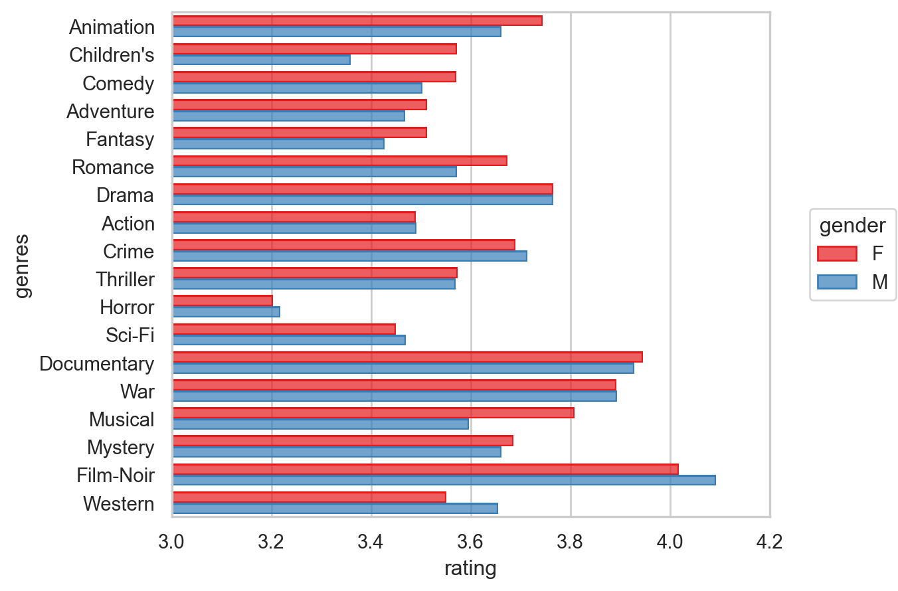
9.3 위의 플랏에서 살펴본 평균 평점의 값을 직접 구해봅니다. 장르별, 남녀로 그룹핑을 하여 평균 평점을 다음과 같이 나오도록 구해보세요.
unstack()을 활용해 보세요.# gender genre F M
# 0 Action ... ...
# 1 Adventure ... ...
# .. ... ... ...
# 16 War ... ...
# 17 Western ... ...9.4 영화별 남녀의 평균 평점의 차이(Female - Male) 순으로 정렬된 플랏을 대략적으로 다음과 같이 그려봅니다.
.limit(x=(3, 4.2))과 .scale(y=so.Nominal(order=[]))이 필요할 수 있습니다.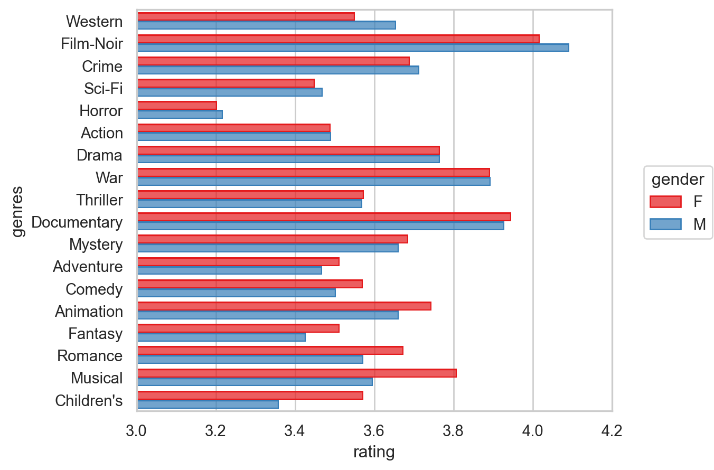
9.5 평점의 장르별 분포를 boxplot으로 볼 수도 있지만, 대신 seaborn.object의 Range()를 써서 평균과 표준편차를 다음과 같이 그려보세요.
.add(so.Range(), so.Est("mean", errorbar="sd"))를 활용하고Agg()을 이용해 표시합니다.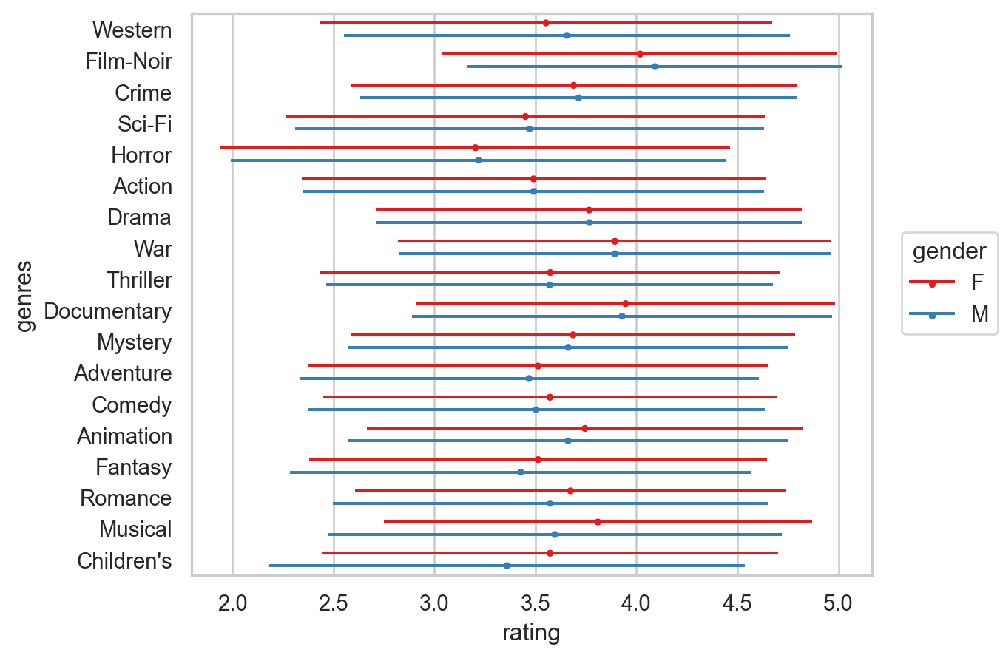
9번에서 데이터를 만들지 못한 경우 경우, 다음 .parquet 파일을 받아 이용해 다음 문제를 이어가세요.
pd.read_parquet("data/movies_long_all.parquet")10.1 우선, 위에서 western 장르가 남녀의 평점 차이가 가장 크게 나타나 남성이 선호하는 것으로 보이는데 western 장르만 따로 떼어 나이대/남녀 별로 rating에 차이가 있는지 살펴봅니다.
so.PolyFit(5)을 이용하여 다음과 같이 그려보세요.
.scale(x=so.Continuous().tick(at=[1, 18, 25, 35, 45, 50, 56]))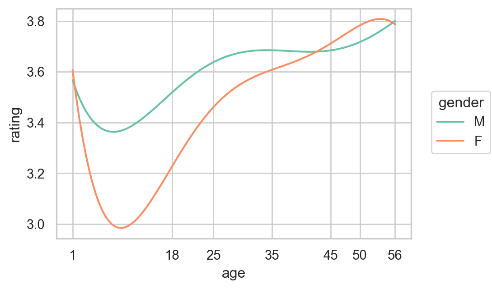
10.2 western 장르의 남녀 차이는 18:18-24세 사이에 가장 커보이고 그 갭은 다른 연령대에서는 줄어드는 것으로 보입니다.
age gender mean size total ratio
0 1 F 3.60 91 3477 0.03
1 1 M 3.57 244 17206 0.01
2 18 F 3.24 503 3477 0.14
3 18 M 3.52 2360 17206 0.14
4 25 F 3.45 1034 3477 0.30
5 25 M 3.63 6019 17206 0.35
6 35 F 3.63 791 3477 0.23
7 35 M 3.69 3755 17206 0.22
8 45 F 3.67 508 3477 0.15
9 45 M 3.67 1625 17206 0.09
10 50 F 3.83 330 3477 0.09
11 50 M 3.73 2090 17206 0.12
12 56 F 3.77 220 3477 0.06
13 56 M 3.80 1113 17206 0.0610.3 이 테이블을 다음과 같이 비율을 pointsize에 mapping하여 시각화해보고, 동일한 나이대에서 남녀의 평점 개수 비율에 차이가 크게 나는지 살펴보세요.
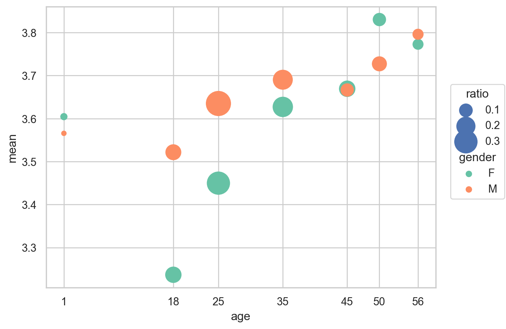
10.4 이제 모든 장르를 한눈에 살펴보기 위해 facet을 이용해 다음과 같이 시각화해보세요.
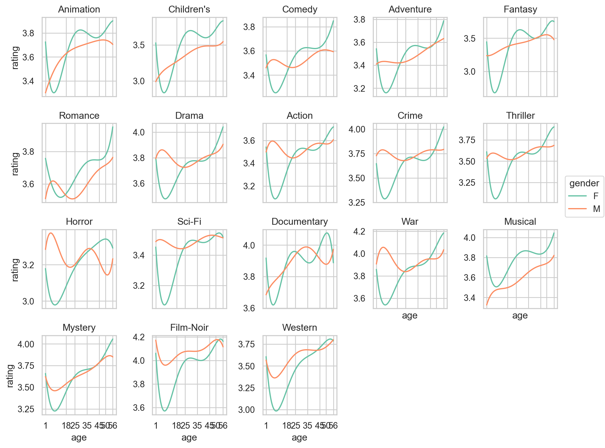
movies["year"] = movies["title"].str.extract(r'\((\d{4})\)').astype("int")
movies movie_id title genres year
0 1 Toy Story (1995) Animation|Children's|Comedy 1995
1 2 Jumanji (1995) Adventure|Children's|Fantasy 1995
2 3 Grumpier Old Men (1995) Comedy|Romance 1995
... ... ... ... ...
3880 3950 Tigerland (2000) Drama 2000
3881 3951 Two Family House (2000) Drama 2000
3882 3952 Contender, The (2000) Drama|Thriller 2000
[3883 rows x 4 columns]11.1 먼저 출시년도별로 얼마나 영화가 있는지 분포를 살펴보세요.
11.2 출시년도가 없는 영화가 있는가요?
11.3 오래된 영화일수록 나이든 사람들의 시청 비율이 높을지에 대해 분포를 살펴보세요.
나이를 다음과 같이 (pandas) category type으로 변환하여 분석합니다.
.assign(
age = lambda x: pd.Categorical(x.age.astype("string"), categories=["1", "18", "25", "35", "45", "50", "56"], ordered=True)
)나이를 row에 facet하는 방식으로 분포를 살펴보세요.
예를 들어, 코메디 장르의 경우 아래 플랏처럼 1920년대에 다른 장르에 비해 상대적으로 높은 비율을 보이다가 1950년대까지는 쭉 낮아지다 다시 증가하는 비율을 보입니다.
장르별로 facet을 하여 모든 장르들의 비율 변화를 그려보세요.
우선 년대를 다음 방식으로 만든 후, 예를 들어, 1990-1999년은 1990이 되도록 한 후
movies.assign(
decade = lambda x: np.floor(x.year / 10) * 10 # np.floor(): 내림
)decade와 genres에 대해 pd.crosstab()을 적용하여 비율에 대한 테이블을 만든 후 stack()을 적용하여 long foramt으로 바꾼 후 그려보세요.
pd.crosstab()의 파라미터를 확인해서 비율을 구하세요.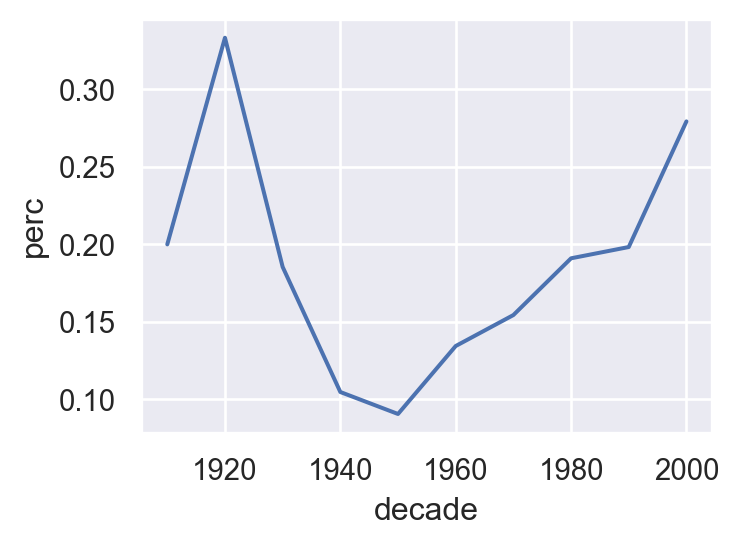
13.1 유저들 중에는 소수의 특정 장르만을 시청할 수 있는데, 다시 말해서 유저별 장르의 편향성을 알아볼 수 있는 지표를 만들어 특정 장르만을 독식하는 유저들을 파악해보는 방식에 대해 아이디어를 기술해보고, 코드로 구현할 수 있는 스텝을 대략 제시해보세요.
13.2 구현된 코드로 실행한 결과를 표시해보세요.
예를 들어, 유저별로 장르마다 몇 %씩을 평가했는지와 전체 유저의 장르별 평가 비율을 구해 상대적으로 유저들이 얼마나 치우쳐 장르를 소비하는 지를 알아보는 방식도 좋겠습니다.